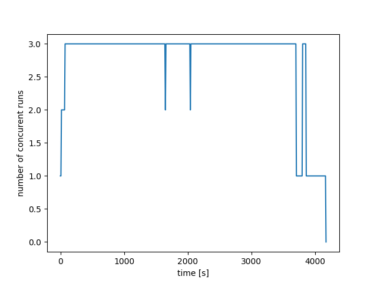
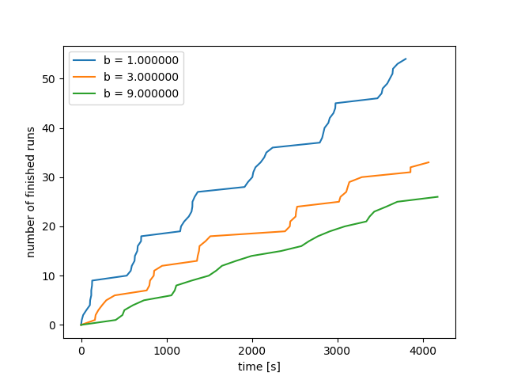
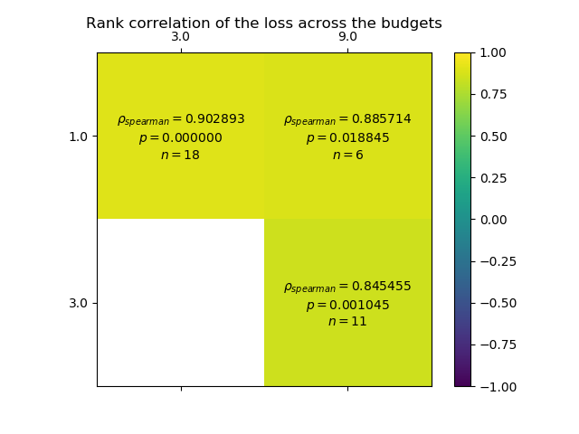
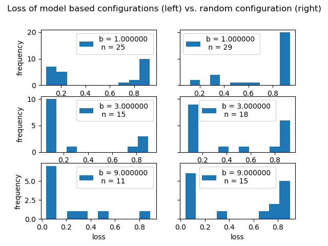

Note
Click here to download the full example code
Example 6 - Analysis of a Run¶
This example takes a run from example 5 and performs some analysis of it. It shows how to get the best performing configuration, and its attributes. More advanced analysis plots provide some insights into a run and the problem.

- 
- 
- 
- 
Out:
Best found configuration:
{'dropout_rate': 0.02991456374412696, 'lr': 0.00953443304046064, 'num_conv_layers': 1, 'num_fc_units': 184, 'num_filters_1': 21, 'optimizer': 'Adam'}
It achieved accuracies of 0.964844 (validation) and 0.964400 (test).
import matplotlib.pyplot as plt
import hpbandster.core.result as hpres
import hpbandster.visualization as hpvis
# load the example run from the log files
result = hpres.logged_results_to_HBS_result('example_5_run/')
# get all executed runs
all_runs = result.get_all_runs()
# get the 'dict' that translates config ids to the actual configurations
id2conf = result.get_id2config_mapping()
# Here is how you get he incumbent (best configuration)
inc_id = result.get_incumbent_id()
# let's grab the run on the highest budget
inc_runs = result.get_runs_by_id(inc_id)
inc_run = inc_runs[-1]
# We have access to all information: the config, the loss observed during
#optimization, and all the additional information
inc_loss = inc_run.loss
inc_config = id2conf[inc_id]['config']
inc_test_loss = inc_run.info['test accuracy']
print('Best found configuration:')
print(inc_config)
print('It achieved accuracies of %f (validation) and %f (test).'%(1-inc_loss, inc_test_loss))
# Let's plot the observed losses grouped by budget,
hpvis.losses_over_time(all_runs)
# the number of concurent runs,
hpvis.concurrent_runs_over_time(all_runs)
# and the number of finished runs.
hpvis.finished_runs_over_time(all_runs)
# This one visualizes the spearman rank correlation coefficients of the losses
# between different budgets.
hpvis.correlation_across_budgets(result)
# For model based optimizers, one might wonder how much the model actually helped.
# The next plot compares the performance of configs picked by the model vs. random ones
hpvis.performance_histogram_model_vs_random(all_runs, id2conf)
plt.show()
Total running time of the script: ( 0 minutes 0.277 seconds)